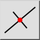

Kolmice
Panel nástrojů / Ikona:


Nabídka: Kreslení > Čára > Kolmice
Zkratka: L, O
Příkazy: lineorthogonal | lo
Panel nástrojů / Ikona:


Tento nástroj umožňuje vytvářet čáry kolmé k existujícímu základnímu prvku. Základní prvek může být čára, oblouk nebo kružnice.